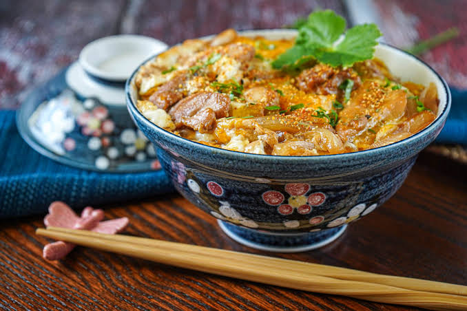

Nikujaga (Japanese Meat & Potato Stew)

Oyakodon is a classic Japanese donburi (rice bowl dish) made by simmering chicken, eggs, and sliced onions in a sweet and savory dashi-and-soy-sauce broth, then pouring the soft-cooked mixture over a hot bed of steamed rice.